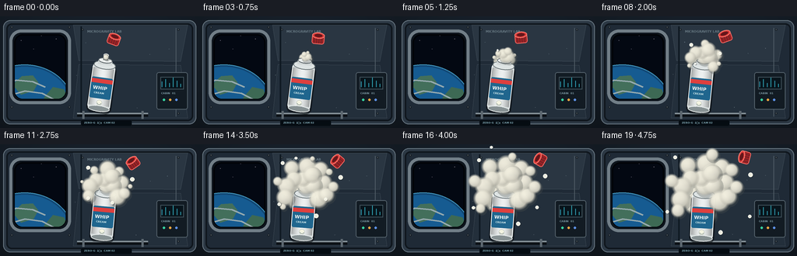
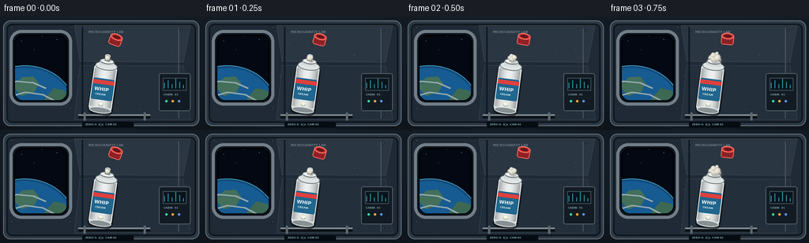

CODING AGENTS AS PIXEL WORLD MODELS
traex/GPT-5.6-Sol · mechanics_0006
点击播放 · 原生 RGB 像素
逐轮保存的候选
回放视频、检查图与代码变化。
每份候选均可单独播放。实际图片检查记录在下方工具轨迹中。
候选 01播放与检查图
点击播放 · 原生 RGB 像素

展开代码变化
--- 上一保存版本
+++ 本次保存版本
@@ -0,0 +1,217 @@
+from pathlib import Path
+import math, json
+import numpy as np
+from PIL import Image, ImageDraw, ImageFont, ImageFilter
+import artifact_io
+
+CASE = Path(__file__).resolve().parent
+spec = json.loads((CASE/'task_spec.json').read_text())
+W,H,N,FPS = spec['width'],spec['height'],spec['frames'],spec['fps']
+S=3
+w,h=W*S,H*S
+
+def sc(v): return int(round(v*S))
+def box(b): return tuple(sc(x) for x in b)
+def font(sz,bold=False):
+ p='/usr/share/fonts/truetype/dejavu/DejaVuSans-Bold.ttf' if bold else '/usr/share/fonts/truetype/dejavu/DejaVuSans.ttf'
+ try:return ImageFont.truetype(p,sc(sz))
+ except:return ImageFont.load_default()
+
+def background(t):
+ yy,xx=np.mgrid[0:h,0:w]
+ # cool, softly vignetted station cabin
+ base=np.zeros((h,w,3),np.float32)
+ grad=0.78+0.22*(1-yy/h)
+ base[:,:,0]=25*grad; base[:,:,1]=35*grad; base[:,:,2]=46*grad
+ vign=np.clip(1-0.25*((xx-w*.50)/(w*.65))**2-0.18*((yy-h*.5)/(h*.65))**2,.55,1)
+ base*=vign[:,:,None]
+ im=Image.fromarray(np.uint8(np.clip(base,0,255)),'RGB')
+ d=ImageDraw.Draw(im)
+ # rear wall plates and seams
+ d.rounded_rectangle(box((4,5,252,139)),radius=sc(9),fill=(44,56,68),outline=(104,119,130),width=sc(1))
+ d.rounded_rectangle(box((8,9,248,135)),radius=sc(7),fill=(31,42,54),outline=(15,22,29),width=sc(2))
+ # panel facets
+ d.polygon([ (sc(94),sc(11)),(sc(241),sc(11)),(sc(232),sc(58)),(sc(101),sc(57))],fill=(42,54,66),outline=(72,85,96))
+ d.polygon([ (sc(101),sc(62)),(sc(232),sc(63)),(sc(241),sc(131)),(sc(94),sc(131))],fill=(35,47,59),outline=(70,82,92))
+ d.line([ (sc(104),sc(13)),(sc(104),sc(129))],fill=(15,25,34),width=sc(2))
+ d.line([ (sc(226),sc(15)),(sc(226),sc(129))],fill=(79,91,101),width=sc(1))
+ # left observation port bezel
+ d.rounded_rectangle(box((12,17,91,113)),radius=sc(15),fill=(13,20,28),outline=(113,126,135),width=sc(4))
+ d.rounded_rectangle(box((18,23,85,107)),radius=sc(11),fill=(3,8,18),outline=(1,3,7),width=sc(2))
+ # Earth through port, clipped using rounded mask
+ earth=Image.new('RGBA',(w,h),(0,0,0,0)); ed=ImageDraw.Draw(earth)
+ # distant stars
+ for sx,sy,br in [(27,31,180),(43,42,120),(72,29,210),(28,82,170),(76,91,150),(53,25,110)]:
+ ed.ellipse(box((sx-.45,sy-.45,sx+.45,sy+.45)),fill=(br,br,br+20,255))
+ # curved planet at lower left
+ ed.ellipse(box((-32,62,95,174)),fill=(17,71,116,255),outline=(70,155,194,255),width=sc(1))
+ ed.ellipse(box((-29,65,92,171)),fill=(22,91,145,255))
+ # continents/cloud bands
+ ed.polygon([(sc(16),sc(88)),(sc(28),sc(77)),(sc(42),sc(76)),(sc(49),sc(85)),(sc(43),sc(96)),(sc(27),sc(101))],fill=(67,111,91,255))
+ ed.polygon([(sc(56),sc(105)),(sc(68),sc(91)),(sc(82),sc(94)),(sc(88),sc(108)),(sc(78),sc(121))],fill=(61,105,84,255))
+ for pts in [[(3,89),(21,82),(42,84),(58,91)],[(11,102),(32,96),(54,99),(77,111)],[(31,116),(52,109),(80,112)]]:
+ ed.line([(sc(x),sc(y)) for x,y in pts],fill=(205,231,235,185),width=sc(2))
+ mask=Image.new('L',(w,h),0); ImageDraw.Draw(mask).rounded_rectangle(box((19,24,84,106)),radius=sc(10),fill=255)
+ earth.putalpha(Image.composite(earth.getchannel('A'),Image.new('L',(w,h),0),mask))
+ im=Image.alpha_composite(im.convert('RGBA'),earth)
+ d=ImageDraw.Draw(im)
+ # hatch bolts, conduits
+ for bx,by in [(15,14),(89,14),(15,117),(89,117),(229,17),(229,125),(106,17),(106,125)]:
+ d.ellipse(box((bx-1.4,by-1.4,bx+1.4,by+1.4)),fill=(122,134,142),outline=(12,18,23),width=sc(.5))
+ d.line((sc(bx-.7),sc(by),sc(bx+.7),sc(by)),fill=(38,46,52),width=sc(.5))
+ # instrument panel on right
+ d.rounded_rectangle(box((201,72,241,120)),radius=sc(3),fill=(18,27,35),outline=(84,98,108),width=sc(1))
+ d.rectangle(box((206,78,236,94)),fill=(8,20,27),outline=(65,82,91),width=sc(1))
+ for i in range(6):
+ x=208+i*4.8; level=[7,10,5,12,8,4][i]
+ d.line((sc(x),sc(91),sc(x),sc(91-level)),fill=(47,156+8*(i%2),179),width=sc(1))
+ d.text((sc(207),sc(97)),'CABIN 01',font=font(3.4,bold=True),fill=(125,153,164))
+ for i,c in enumerate([(55,212,160),(243,167,66),(93,145,229)]):
+ d.ellipse(box((209+i*8,106,212+i*8,109)),fill=c)
+ # bottom handrail
+ d.line((sc(99),sc(127),sc(190),sc(127)),fill=(13,18,23),width=sc(5))
+ d.line((sc(99),sc(125),sc(190),sc(125)),fill=(131,143,150),width=sc(2))
+ for x in (107,183): d.line((sc(x),sc(122),sc(x),sc(132)),fill=(93,104,112),width=sc(3))
+ # top strip text
+ d.text((sc(112),sc(17)),'MICROGRAVITY LAB',font=font(4,bold=True),fill=(104,122,132))
+ return im
+
+def draw_canister(cx,cy,angle):
+ # draw upright at large scale and rotate around its center
+ lw,lh=sc(48),sc(90)
+ lay=Image.new('RGBA',(lw,lh),(0,0,0,0)); d=ImageDraw.Draw(lay)
+ ox=lw//2
+ # soft drop shadow silhouette
+ d.rounded_rectangle((sc(8),sc(20),sc(40),sc(82)),radius=sc(7),fill=(8,12,16,145))
+ # body metallic cylinder
+ d.rounded_rectangle((sc(9),sc(18),sc(38),sc(78)),radius=sc(6),fill=(207,214,215,255),outline=(240,245,244,255),width=sc(1))
+ # longitudinal shading
+ for i in range(sc(27)):
+ u=i/max(1,sc(26)); shade=int(165+72*math.sin(math.pi*u))
+ d.line((sc(10)+i,sc(24),sc(10)+i,sc(72)),fill=(shade,shade+3,shade+3,255),width=1)
+ # top shoulder/rim/nozzle
+ d.ellipse((sc(10),sc(14),sc(38),sc(25)),fill=(222,228,228,255),outline=(110,120,123,255),width=sc(1))
+ d.rectangle((sc(15),sc(13),sc(33),sc(19)),fill=(210,216,216,255))
+ d.ellipse((sc(15),sc(10),sc(33),sc(17)),fill=(236,240,239,255),outline=(91,100,104,255),width=sc(1))
+ d.rectangle((sc(21),sc(6),sc(27),sc(13)),fill=(231,234,232,255),outline=(106,111,110,255),width=sc(1))
+ d.ellipse((sc(20.5),sc(4.5),sc(27.5),sc(8.5)),fill=(71,77,77,255),outline=(237,240,238,255),width=sc(1))
+ # label
+ d.rounded_rectangle((sc(10),sc(36),sc(37),sc(63)),radius=sc(2),fill=(32,102,142,255))
+ d.rectangle((sc(10),sc(38),sc(37),sc(43)),fill=(222,64,62,255))
+ d.text((sc(13),sc(46)),'WHIP',font=font(6,bold=True),fill=(246,249,244,255))
+ d.text((sc(15),sc(54)),'CREAM',font=font(3.3,bold=True),fill=(211,236,237,255))
+ d.ellipse((sc(20),sc(65),sc(27),sc(72)),fill=(244,244,226,255),outline=(161,173,169,255))
+ d.arc((sc(21),sc(67),sc(26),sc(71)),0,180,fill=(132,148,145,255),width=sc(.6))
+ d.ellipse((sc(10),sc(72),sc(38),sc(80)),fill=(135,145,147,255),outline=(230,235,234,255),width=sc(1))
+ rot=lay.rotate(angle,resample=Image.Resampling.BICUBIC,expand=True)
+ return rot,(sc(cx)-rot.width//2,sc(cy)-rot.height//2)
+
+def mouth_pos(cx,cy,angle):
+ # local vector from can center to nozzle top
+ vx,vy=0,-36
+ a=math.radians(-angle) # PIL positive angle is CCW visually
+ return cx+vx*math.cos(a)-vy*math.sin(a), cy+vx*math.sin(a)+vy*math.cos(a)
+
+def cream_layer(mouth,p,foreground=False):
+ layer=Image.new('RGBA',(w,h),(0,0,0,0))
+ # fixed radial lobe design, appearing over time; first one keeps contact to nozzle
+ lobes=[
+ (0,0,11,0.00),(0,10,9,.02),(-10,1,10,.06),(10,-2,11,.08),(-4,-11,10,.12),
+ (17,7,11,.16),(-18,10,12,.18),(9,-17,11,.20),(-18,-11,10,.24),(2,20,12,.27),
+ (27,-6,10,.31),(-29,0,11,.33),(19,19,12,.35),(-15,24,10,.39),(2,-29,12,.41),
+ (31,13,10,.48),(-31,17,11,.50),(22,-25,10,.53),(-21,-27,10,.56),(41,1,8,.62),
+ (-42,-7,8,.66),(4,37,10,.68),(35,-21,8,.72),(-34,31,8,.74),(10,-41,8,.78)
+ ]
+ selected=[]
+ growth=max(0.08,p)
+ for idx,(dx,dy,r,born) in enumerate(lobes):
+ if p+0.02 < born: continue
+ age=np.clip((p-born)/.24,0,1)
+ if idx==0: age=np.clip(.35+p*1.3,0,1)
+ expansion=(0.12+0.88*(p**.82))
+ x=mouth[0]+dx*expansion
+ y=mouth[1]+dy*expansion
+ rr=r*(.30+.70*age)*(0.62+.55*p)
+ # split into back/front according to lobes
+ front=(idx%4 in (0,3))
+ if front==foreground: selected.append((x,y,rr,idx))
+ # shadows first establish cauliflower-like relief
+ d=ImageDraw.Draw(layer)
+ for x,y,r,idx in selected:
+ d.ellipse(box((x-r+1.5,y-r+2.0,x+r+1.5,y+r+2.0)),fill=(76,82,80,72))
+ # radial shaded spheres, deterministic warm cream
+ yy,xx=np.mgrid[0:h,0:w]
+ for x,y,r,idx in selected:
+ if r<.35: continue
+ X=xx/S;Y=yy/S
+ dist=np.sqrt(((X-x)/r)**2+((Y-y)/r)**2)
+ alpha=np.clip((1.035-dist)*S,0,1)
+ # upper-left studio light and edge occlusion
+ z=np.sqrt(np.clip(1-dist**2,0,1))
+ light=np.clip(.70+.27*z + .08*(-(X-x)/r) + .09*(-(Y-y)/r),.56,1.08)
+ # faint warm creamy tint
+ rgb=np.stack([245*light,242*light,226*light],axis=-1)
+ arr=np.zeros((h,w,4),np.uint8)
+ arr[:,:,:3]=np.uint8(np.clip(rgb,0,255)); arr[:,:,3]=np.uint8(alpha*245)
+ layer=Image.alpha_composite(layer,Image.fromarray(arr,'RGBA'))
+ return layer
+
+def detached_globs(im,mouth,p):
+ # zero-g satellite droplets gradually moving outward
+ lay=Image.new('RGBA',(w,h),(0,0,0,0)); d=ImageDraw.Draw(lay)
+ droplets=[(-1,-1,53,2.4,.28),(1,-.25,61,2.8,.38),(-.8,.55,58,2.1,.47),(.35,1,63,2.7,.57),(-.35,-1,70,1.8,.67),(.9,.6,70,2.1,.73)]
+ for vx,vy,dist,r,born in droplets:
+ if p<born: continue
+ q=(p-born)/(1-born)
+ mag=dist*(.20+.80*q)
+ norm=math.hypot(vx,vy)
+ x=mouth[0]+vx/norm*mag; y=mouth[1]+vy/norm*mag
+ rr=r*(.45+.55*min(1,q*3))
+ d.ellipse(box((x-rr+1,y-rr+1,x+rr+1,y+rr+1)),fill=(24,29,31,70))
+ d.ellipse(box((x-rr,y-rr,x+rr,y+rr)),fill=(240,239,223,255),outline=(255,255,244,255),width=sc(.5))
+ d.ellipse(box((x-rr*.45,y-rr*.50,x-rr*.05,y-rr*.10)),fill=(255,255,251,220))
+ return Image.alpha_composite(im,lay)
+
+def cap_layer(p):
+ # red cap knocked free and drifting/rolling slowly toward upper right
+ x=146+43*p; y=30-13*p+2*math.sin(p*math.pi)
+ ang=-20+95*p
+ lay=Image.new('RGBA',(sc(22),sc(21)),(0,0,0,0)); d=ImageDraw.Draw(lay)
+ d.rounded_rectangle(box((3,5,19,17)),radius=sc(3),fill=(154,33,36,255),outline=(244,101,94,255),width=sc(1))
+ d.ellipse(box((3,2,19,10)),fill=(216,57,56,255),outline=(255,124,112,255),width=sc(1))
+ d.ellipse(box((6,4,16,8)),fill=(99,23,27,255))
+ for xx in [6,9,12,15]: d.line((sc(xx),sc(10),sc(xx),sc(16)),fill=(112,25,30,180),width=sc(.6))
+ rot=lay.rotate(ang,Image.Resampling.BICUBIC,expand=True)
+ return rot,(sc(x)-rot.width//2,sc(y)-rot.height//2)
+
+def render(i):
+ # smooth expansion with visible evolution through whole five seconds
+ p=i/(N-1)
+ eased=1-(1-p)**1.25
+ im=background(p)
+ # subtle floating dust motes
+ dust=Image.new('RGBA',(w,h),(0,0,0,0)); dd=ImageDraw.Draw(dust)
+ for k,(x,y) in enumerate([(110,34),(191,49),(174,118),(97,76),(217,42)]):
+ xx=x+math.sin(.8*k+p*2)*2; yy=y-p*(2+k%2)
+ dd.ellipse(box((xx-.35,yy-.35,xx+.35,yy+.35)),fill=(196,216,221,85))
+ im=Image.alpha_composite(im,dust)
+ cx=131+4*p; cy=88+2*p
+ angle=-8+5*p
+ mouth=mouth_pos(cx,cy,angle)
+ # back portion of foam wraps around the can
+ im=Image.alpha_composite(im,cream_layer(mouth,eased,False))
+ can,pos=draw_canister(cx,cy,angle)
+ im.alpha_composite(can,pos)
+ # connector dollop/foreground cauliflower lobes
+ im=Image.alpha_composite(im,cream_layer(mouth,eased,True))
+ im=detached_globs(im,mouth,eased)
+ cap,cpos=cap_layer(p); im.alpha_composite(cap,cpos)
+ # lower-left caption styled as camera telemetry, not intrusive
+ d=ImageDraw.Draw(im)
+ d.rounded_rectangle(box((104,134,169,141)),radius=sc(2),fill=(5,12,18,155))
+ d.text((sc(108),sc(135.1)),'ZERO-G ⢠CAM 02',font=font(3.4,bold=True),fill=(129,169,181,220))
+ return np.array(im.convert('RGB').resize((W,H),Image.Resampling.LANCZOS),dtype=np.uint8)
+
+frames=np.stack([render(i) for i in range(N)],axis=0)
+artifact_io.save(frames,CASE)
+print('saved',frames.shape,frames.dtype)
可观测工具轨迹
实际执行的命令与返回图片。
命令 1exit 0
/bin/bash -lc "cat prompt.txt && printf '\\n---RULES---\\n' && cat GENERATION_RULES.md && printf '\\n---SPEC---\\n' && cat task_spec.json"
命令 2exit 0
/bin/bash -lc "find . -maxdepth 2 -type f -printf '%p\\n' | sort | head -200"
命令 3exit 0
/bin/bash -lc "cat artifact_io.py; python - <<'PY'
import PIL, numpy
print('PIL',PIL.__version__)
PY"命令 4exit 0
/bin/bash -lc "cat > generate.py <<'PY'
from pathlib import Path
import math, json
import numpy as np
from PIL import Image, ImageDraw, ImageFont, ImageFilter
import artifact_io
CASE = Path(__file__).resolve().parent
spec = json.loads((CASE/'task_spec.json').read_text())
W,H,N,FPS = spec['width'],spec['height'],spec['frames'],spec['fps']
S=3
w,h=W*S,H*S
def sc(v): return int(round(v*S))
def box(b): return tuple(sc(x) for x in b)
def font(sz,bold=False):
p='/usr/share/fonts/truetype/dejavu/DejaVuSans-Bold.ttf' if bold else '/usr/share/fonts/truetype/dejavu/DejaVuSans.ttf'
try:return ImageFont.truetype(p,sc(sz))
except:return ImageFont.load_default()
def background(t):
yy,xx=np.mgrid[0:h,0:w]
# cool, softly vignetted station cabin
base=np.zeros((h,w,3),np.float32)
grad=0.78+0.22*(1-yy/h)
base[:,:,0]=25*grad; base[:,:,1]=35*grad; base[:,:,2]=46*grad
vign=np.clip(1-0.25*((xx-w*.50)/(w*.65))**2-0.18*((yy-h*.5)/(h*.65))**2,.55,1)
base*=vign[:,:,None]
im=Image.fromarray(np.uint8(np.clip(base,0,255)),'RGB')
d=ImageDraw.Draw(im)
# rear wall plates and seams
d.rounded_rectangle(box((4,5,252,139)),radius=sc(9),fill=(44,56,68),outline=(104,119,130),width=sc(1))
d.rounded_rectangle(box((8,9,248,135)),radius=sc(7),fill=(31,42,54),outline=(15,22,29),width=sc(2))
# panel facets
d.polygon([ (sc(94),sc(11)),(sc(241),sc(11)),(sc(232),sc(58)),(sc(101),sc(57))],fill=(42,54,66),outline=(72,85,96))
d.polygon([ (sc(101),sc(62)),(sc(232),sc(63)),(sc(241),sc(131)),(sc(94),sc(131))],fill=(35,47,59),outline=(70,82,92))
d.line([ (sc(104),sc(13)),(sc(104),sc(129))],fill=(15,25,34),width=sc(2))
d.line([ (sc(226),sc(15)),(sc(226),sc(129))],fill=(79,91,101),width=sc(1))
# left observation port bezel
d.rounded_rectangle(box((12,17,91,113)),radius=sc(15),fill=(13,20,28),outline=(113,126,135),width=sc(4))
d.rounded_rectangle(box((18,23,85,107)),radius=sc(11),fill=(3,8,18),outline=(1,3,7),width=sc(2))
# Earth through port, clipped using rounded mask
earth=Image.new('RGBA',(w,h),(0,0,0,0)); ed=ImageDraw.Draw(earth)
# distant stars
for sx,sy,br in [(27,31,180),(43,42,120),(72,29,210),(28,82,170),(76,91,150),(53,25,110)]:
ed.ellipse(box((sx-.45,sy-.45,sx+.45,sy+.45)),fill=(br,br,br+20,255))
# curved planet at lower left
ed.ellipse(box((-32,62,95,174)),fill=(17,71,116,255),outline=(70,155,194,255),width=sc(1))
ed.ellipse(box((-29,65,92,171)),fill=(22,91,145,255))
# continents/cloud bands
ed.polygon([(sc(16),sc(88)),(sc(28),sc(77)),(sc(42),sc(76)),(sc(49),sc(85)),(sc(43),sc(96)),(sc(27),sc(101))],fill=(67,111,91,255))
ed.polygon([(sc(56),sc(105)),(sc(68),sc(91)),(sc(82),sc(94)),(sc(88),sc(108)),(sc(78),sc(121))],fill=(61,105,84,255))
for pts in [[(3,89),(21,82),(42,84),(58,91)],[(11,102),(32,96),(54,99),(77,111)],[(31,116),(52,109),(80,112)]]:
ed.line([(sc(x),sc(y)) for x,y in pts],fill=(205,231,235,185),width=sc(2))
mask=Image.new('L',(w,h),0); ImageDraw.Draw(mask).rounded_rectangle(box((19,24,84,106)),radius=sc(10),fill=255)
earth.putalpha(Image.composite(earth.getchannel('A'),Image.new('L',(w,h),0),mask))
im=Image.alpha_composite(im.convert('RGBA'),earth)
d=ImageDraw.Draw(im)
# hatch bolts, conduits
for bx,by in [(15,14),(89,14),(15,117),(89,117),(229,17),(229,125),(106,17),(106,125)]:
d.ellipse(box((bx-1.4,by-1.4,bx+1.4,by+1.4)),fill=(122,134,142),outline=(12,18,23),width=sc(.5))
d.line((sc(bx-.7),sc(by),sc(bx+.7),sc(by)),fill=(38,46,52),width=sc(.5))
# instrument panel on right
d.rounded_rectangle(box((201,72,241,120)),radius=sc(3),fill=(18,27,35),outline=(84,98,108),width=sc(1))
d.rectangle(box((206,78,236,94)),fill=(8,20,27),outline=(65,82,91),width=sc(1))
for i in range(6):
x=208+i*4.8; level=[7,10,5,12,8,4][i]
d.line((sc(x),sc(91),sc(x),sc(91-level)),fill=(47,156+8*(i%2),179),width=sc(1))
d.text((sc(207),sc(97)),'CABIN 01',font=font(3.4,bold=True),fill=(125,153,164))
for i,c in enumerate([(55,212,160),(243,167,66),(93,145,229)]):
d.ellipse(box((209+i*8,106,212+i*8,109)),fill=c)
# bottom handrail
d.line((sc(99),sc(127),sc(190),sc(127)),fill=(13,18,23),width=sc(5))
d.line((sc(99),sc(125),sc(190),sc(125)),fill=(131,143,150),width=sc(2))
for x in (107,183): d.line((sc(x),sc(122),sc(x),sc(132)),fill=(93,104,112),width=sc(3))
# top strip text
d.text((sc(112),sc(17)),'MICROGRAVITY LAB',font=font(4,bold=True),fill=(104,122,132))
return im
def draw_canister(cx,cy,angle):
# draw upright at large scale and rotate around its center
lw,lh=sc(48),sc(90)
lay=Image.new('RGBA',(lw,lh),(0,0,0,0)); d=ImageDraw.Draw(lay)
ox=lw//2
# soft drop shadow silhouette
d.rounded_rectangle((sc(8),sc(20),sc(40),sc(82)),radius=sc(7),fill=(8,12,16,145))
# body metallic cylinder
d.rounded_rectangle((sc(9),sc(18),sc(38),sc(78)),radius=sc(6),fill=(207,214,215,255),outline=(240,245,244,255),width=sc(1))
# longitudinal shading
for i in range(sc(27)):
u=i/max(1,sc(26)); shade=int(165+72*math.sin(math.pi*u))
d.line((sc(10)+i,sc(24),sc(10)+i,sc(72)),fill=(shade,shade+3,shade+3,255),width=1)
# top shoulder/rim/nozzle
d.ellipse((sc(10),sc(14),sc(38),sc(25)),fill=(222,228,228,255),outline=(110,120,123,255),width=sc(1))
d.rectangle((sc(15),sc(13),sc(33),sc(19)),fill=(210,216,216,255))
d.ellipse((sc(15),sc(10),sc(33),sc(17)),fill=(236,240,239,255),outline=(91,100,104,255),width=sc(1))
d.rectangle((sc(21),sc(6),sc(27),sc(13)),fill=(231,234,232,255),outline=(106,111,110,255),width=sc(1))
d.ellipse((sc(20.5),sc(4.5),sc(27.5),sc(8.5)),fill=(71,77,77,255),outline=(237,240,238,255),width=sc(1))
# label
d.rounded_rectangle((sc(10),sc(36),sc(37),sc(63)),radius=sc(2),fill=(32,102,142,255))
d.rectangle((sc(10),sc(38),sc(37),sc(43)),fill=(222,64,62,255))
d.text((sc(13),sc(46)),'WHIP',font=font(6,bold=True),fill=(246,249,244,255))
d.text((sc(15),sc(54)),'CREAM',font=font(3.3,bold=True),fill=(211,236,237,255))
d.ellipse((sc(20),sc(65),sc(27),sc(72)),fill=(244,244,226,255),outline=(161,173,169,255))
d.arc((sc(21),sc(67),sc(26),sc(71)),0,180,fill=(132,148,145,255),width=sc(.6))
d.ellipse((sc(10),sc(72),sc(38),sc(80)),fill=(135,145,147,255),outline=(230,235,234,255),width=sc(1))
rot=lay.rotate(angle,resample=Image.Resampling.BICUBIC,expand=True)
return rot,(sc(cx)-rot.width//2,sc(cy)-rot.height//2)
def mouth_pos(cx,cy,angle):
# local vector from can center to nozzle top
vx,vy=0,-36
a=math.radians(-angle) # PIL positive angle is CCW visually
return cx+vx*math.cos(a)-vy*math.sin(a), cy+vx*math.sin(a)+vy*math.cos(a)
def cream_layer(mouth,p,foreground=False):
layer=Image.new('RGBA',(w,h),(0,0,0,0))
# fixed radial lobe design, appearing over time; first one keeps contact to nozzle
lobes=[
(0,0,11,0.00),(0,10,9,.02),(-10,1,10,.06),(10,-2,11,.08),(-4,-11,10,.12),
(17,7,11,.16),(-18,10,12,.18),(9,-17,11,.20),(-18,-11,10,.24),(2,20,12,.27),
(27,-6,10,.31),(-29,0,11,.33),(19,19,12,.35),(-15,24,10,.39),(2,-29,12,.41),
(31,13,10,.48),(-31,17,11,.50),(22,-25,10,.53),(-21,-27,10,.56),(41,1,8,.62),
(-42,-7,8,.66),(4,37,10,.68),(35,-21,8,.72),(-34,31,8,.74),(10,-41,8,.78)
]
selected=[]
growth=max(0.08,p)
for idx,(dx,dy,r,born) in enumerate(lobes):
if p+0.02 < born: continue
age=np.clip((p-born)/.24,0,1)
if idx==0: age=np.clip(.35+p*1.3,0,1)
expansion=(0.12+0.88*(p**.82))
x=mouth[0]+dx*expansion
y=mouth[1]+dy*expansion
rr=r*(.30+.70*age)*(0.62+.55*p)
# split into back/front according to lobes
front=(idx%4 in (0,3))
if front==foreground: selected.append((x,y,rr,idx))
# shadows first establish cauliflower-like relief
d=ImageDraw.Draw(layer)
for x,y,r,idx in selected:
d.ellipse(box((x-r+1.5,y-r+2.0,x+r+1.5,y+r+2.0)),fill=(76,82,80,72))
# radial shaded spheres, deterministic warm cream
yy,xx=np.mgrid[0:h,0:w]
for x,y,r,idx in selected:
if r<.35: continue
X=xx/S;Y=yy/S
dist=np.sqrt(((X-x)/r)**2+((Y-y)/r)**2)
alpha=np.clip((1.035-dist)*S,0,1)
# upper-left studio light and edge occlusion
z=np.sqrt(np.clip(1-dist**2,0,1))
light=np.clip(.70+.27*z + .08*(-(X-x)/r) + .09*(-(Y-y)/r),.56,1.08)
# faint warm creamy tint
rgb=np.stack([245*light,242*light,226*light],axis=-1)
arr=np.zeros((h,w,4),np.uint8)
arr[:,:,:3]=np.uint8(np.clip(rgb,0,255)); arr[:,:,3]=np.uint8(alpha*245)
layer=Image.alpha_composite(layer,Image.fromarray(arr,'RGBA'))
return layer
def detached_globs(im,mouth,p):
# zero-g satellite droplets gradually moving outward
lay=Image.new('RGBA',(w,h),(0,0,0,0)); d=ImageDraw.Draw(lay)
droplets=[(-1,-1,53,2.4,.28),(1,-.25,61,2.8,.38),(-.8,.55,58,2.1,.47),(.35,1,63,2.7,.57),(-.35,-1,70,1.8,.67),(.9,.6,70,2.1,.73)]
for vx,vy,dist,r,born in droplets:
if p<born: continue
q=(p-born)/(1-born)
mag=dist*(.20+.80*q)
norm=math.hypot(vx,vy)
x=mouth[0]+vx/norm*mag; y=mouth[1]+vy/norm*mag
rr=r*(.45+.55*min(1,q*3))
d.ellipse(box((x-rr+1,y-rr+1,x+rr+1,y+rr+1)),fill=(24,29,31,70))
d.ellipse(box((x-rr,y-rr,x+rr,y+rr)),fill=(240,239,223,255),outline=(255,255,244,255),width=sc(.5))
d.ellipse(box((x-rr*.45,y-rr*.50,x-rr*.05,y-rr*.10)),fill=(255,255,251,220))
return Image.alpha_composite(im,lay)
def cap_layer(p):
# red cap knocked free and drifting/rolling slowly toward upper right
x=146+43*p; y=30-13*p+2*math.sin(p*math.pi)
ang=-20+95*p
lay=Image.new('RGBA',(sc(22),sc(21)),(0,0,0,0)); d=ImageDraw.Draw(lay)
d.rounded_rectangle(box((3,5,19,17)),radius=sc(3),fill=(154,33,36,255),outline=(244,101,94,255),width=sc(1))
d.ellipse(box((3,2,19,10)),fill=(216,57,56,255),outline=(255,124,112,255),width=sc(1))
d.ellipse(box((6,4,16,8)),fill=(99,23,27,255))
for xx in [6,9,12,15]: d.line((sc(xx),sc(10),sc(xx),sc(16)),fill=(112,25,30,180),width=sc(.6))
rot=lay.rotate(ang,Image.Resampling.BICUBIC,expand=True)
return rot,(sc(x)-rot.width//2,sc(y)-rot.height//2)
def render(i):
# smooth expansion with visible evolution through whole five seconds
p=i/(N-1)
eased=1-(1-p)**1.25
im=background(p)
# subtle floating dust motes
dust=Image.new('RGBA',(w,h),(0,0,0,0)); dd=ImageDraw.Draw(dust)
for k,(x,y) in enumerate([(110,34),(191,49),(174,118),(97,76),(217,42)]):
xx=x+math.sin(.8*k+p*2)*2; yy=y-p*(2+k%2)
dd.ellipse(box((xx-.35,yy-.35,xx+.35,yy+.35)),fill=(196,216,221,85))
im=Image.alpha_composite(im,dust)
cx=131+4*p; cy=88+2*p
angle=-8+5*p
mouth=mouth_pos(cx,cy,angle)
# back portion of foam wraps around the can
im=Image.alpha_composite(im,cream_layer(mouth,eased,False))
can,pos=draw_canister(cx,cy,angle)
im.alpha_composite(can,pos)
# connector dollop/foreground cauliflower lobes
im=Image.alpha_composite(im,cream_layer(mouth,eased,True))
im=detached_globs(im,mouth,eased)
cap,cpos=cap_layer(p); im.alpha_composite(cap,cpos)
# lower-left caption styled as camera telemetry, not intrusive
d=ImageDraw.Draw(im)
d.rounded_rectangle(box((104,134,169,141)),radius=sc(2),fill=(5,12,18,155))
d.text((sc(108),sc(135.1)),'ZERO-G ⢠CAM 02',font=font(3.4,bold=True),fill=(129,169,181,220))
return np.array(im.convert('RGB').resize((W,H),Image.Resampling.LANCZOS),dtype=np.uint8)
frames=np.stack([render(i) for i in range(N)],axis=0)
artifact_io.save(frames,CASE)
print('saved',frames.shape,frames.dtype)
PY
python generate.py"命令 5exit 0
/bin/bash -lc "python - <<'PY'
p='generate.py'
s=open(p).read()
s=s.replace(\"'ZERO-G ⢠CAM 02'\", \"'ZERO-G | CAM 02'\")
open(p,'w').write(s)
PY
python generate.py
python - <<'PY'
from pathlib import Path
import numpy as np
from PIL import Image
p=Path('.')
a=np.load('pixels.npz')['pixels']
files=list(Path('frames').glob('*.png'))
print('pixels',a.shape,a.dtype,'frames',len(files),'html',Path('index.html').stat().st_size)
for q in ['frames/00.png','frames/19.png','inspection.png','transition_check.png']:
im=Image.open(q); print(q,im.mode,im.size)
PY"视觉工具实际返回图片 1

视觉工具实际返回图片 2

保存候选 1 份；完成命令 5 次；可验证图片返回 2 张。原始 API 响应与完整日志保留在本地。